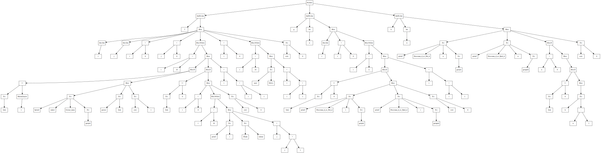
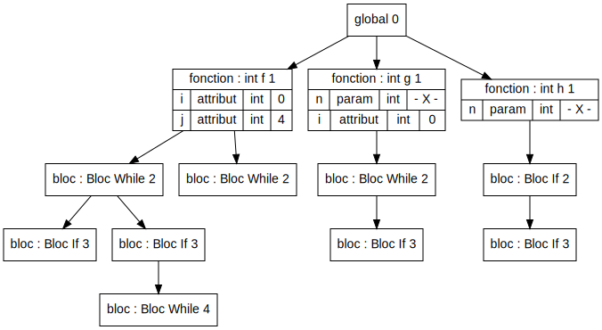

<!DOCTYPE html>
<html>
<head>
    <meta charset="utf-8">
    <meta name="viewport" content="width=device-width, initial-scale=1">
    <link href="https://cdn.jsdelivr.net/npm/bootstrap@5.1.3/dist/css/bootstrap.min.css" rel="stylesheet" integrity="sha384-1BmE4kWBq78iYhFldvKuhfTAU6auU8tT94WrHftjDbrCEXSU1oBoqyl2QvZ6jIW3" crossorigin="anonymous">
<title>Test_Complet/test6</title>
    <style>
        body {
            font-family: "Lato", sans-serif;
        }

        pre {
            font-family: courier;
            font-size: 60%;
        }

        .sidenav {
            width: 130px;
            position: fixed;
            z-index: 1;
            top: 20px;
            left: 10px;
            background: #eee;
            overflow-x: hidden;
            padding: 8px 0;
        }

        .sidenav a {
            padding: 6px 8px 6px 16px;
            text-decoration: none;
            font-size: 25px;
            color: #2196F3;
            display: block;
        }

        .sidenav a:hover {
            color: #064579;
        }

        .img-container{
            width: 1800px; /*width of the container the image is in, your choice*/
            height: 700px; /*means the height of the container is the same as the image so you are not scrolling vertically*/
            overflow-x: scroll; /*this is the important line that tells the browser to scroll content outside the div*/
            overflow-y: scroll;
        }

        .main {
            margin-left: 140px; /* Same width as the sidebar + left position in px */
            font-size: 28px; /* Increased text to enable scrolling */
            padding: 0px 10px;
        }

        @media screen and (max-height: 450px) {
            .sidenav {padding-top: 15px;}
            .sidenav a {font-size: 18px;}
        }
    </style>
</head>
<body>

<div class="sidenav">
    <a href="#code">Code</a>
    <a href="#error">Error</a>
    <a href="#ast">AST</a>
    <a href="#tds">TDS</a>
</div>

<div class="main">

	<h2><span style="color: #3366ff;">Test : Test_Complet/test6.exp</span></h2>

	<p>&nbsp;</p>
	<h3 id="code"><span style="color: #333333;">Code</span></h3>
	<p>&nbsp;</p>
	<div class="alert alert-secondary" role="alert">
	<p>		<pre>int f() {</pre>
		<pre>    int i ;</pre>
		<pre>    int j ;</pre>
		<pre>    i = 0 ;</pre>
		<pre>    j = 0 ;</pre>
		<pre>    while(i<10) {</pre>
		<pre>        if(fork() == -1) {</pre>
		<pre>            fprintf(stderr, Erreur_dans, getpid()) ;</pre>
		<pre>            perror(fork) ;</pre>
		<pre>            exit(1) ;</pre>
		<pre>        }</pre>
		<pre>        if (fork() == 0) {</pre>
		<pre>            i = 0 ;</pre>
		<pre>            while(i<10) {</pre>
		<pre>            printf(i) ;</pre>
		<pre>            fflush(stdout) ;</pre>
		<pre>            j = j + 1 ;</pre>
		<pre>            }</pre>
		<pre>            exit(0) ;</pre>
		<pre>        }</pre>
		<pre>        i = i + 1 ;</pre>
		<pre>    }</pre>
		<pre>    i = 0 ;</pre>
		<pre>    while(i<10) {</pre>
		<pre>        wait(NULL) ;</pre>
		<pre>        i = i + 1 ;</pre>
		<pre>    }</pre>
		<pre>    exit(0) ;</pre>
		<pre>}</pre>
		<pre></pre>
		<pre>int g(int n) {</pre>
		<pre>    int i ;</pre>
		<pre>    i = 0 ;</pre>
		<pre>    while(i<n) {</pre>
		<pre>        if (fork() == 0) {</pre>
		<pre>            printf(Processus_d_et_Pid_d, i, getpid()) ;</pre>
		<pre>            printf(Processus_d_et_Ppid_d, i, getppid()) ;</pre>
		<pre>            exit(0) ;</pre>
		<pre>        }</pre>
		<pre>        i = i + 1 ;</pre>
		<pre>    }</pre>
		<pre>}</pre>
		<pre></pre>
		<pre>int h(int n) {</pre>
		<pre>    printf(Processus_d_et_Pid_d, n, getpid()) ;</pre>
		<pre>    printf(Processus_d_et_Ppid_d, n, getppid()) ;</pre>
		<pre>    if (n > 0) {</pre>
		<pre>        if (fork() == 0) {</pre>
		<pre>            h(n - 1) ;</pre>
		<pre>        }</pre>
		<pre>    }</pre>
		<pre>    exit(0) ;</pre>
		<pre></pre>
	</p>
	</div>

	<p>&nbsp;</p>
	<h3 id="error"><span style="color: #333333;">Erreur</span></h3>
	<p>&nbsp;</p>
	<div class="alert alert-secondary" role="alert">
	<p>		<pre style="color: red;">Erreur fonction : fork non definie</pre>
		<pre style="color: red;">Erreur variable : stderr non definie</pre>
		<pre style="color: red;">Erreur variable : Erreur_dans non definie</pre>
		<pre style="color: red;">Erreur fonction : getpid non definie</pre>
		<pre style="color: red;">Erreur fonction : fprintf non definie</pre>
		<pre style="color: red;">Erreur variable : fork non definie</pre>
		<pre style="color: red;">Erreur fonction : perror non definie</pre>
		<pre style="color: red;">Erreur fonction : exit non definie</pre>
		<pre style="color: red;">Erreur fonction : fork non definie</pre>
		<pre style="color: red;">Erreur fonction : printf non definie</pre>
		<pre style="color: red;">Erreur variable : stdout non definie</pre>
		<pre style="color: red;">Erreur fonction : fflush non definie</pre>
		<pre style="color: red;">Erreur fonction : exit non definie</pre>
		<pre style="color: red;">Erreur variable : NULL non definie</pre>
		<pre style="color: red;">Erreur fonction : wait non definie</pre>
		<pre style="color: red;">Erreur fonction : exit non definie</pre>
		<pre style="color: red;">Erreur fonction : f ne renvoie pas d'element dans tous les cas</pre>
		<pre style="color: red;">Erreur fonction : fork non definie</pre>
		<pre style="color: red;">Erreur variable : Processus_d_et_Pid_d non definie</pre>
		<pre style="color: red;">Erreur fonction : getpid non definie</pre>
		<pre style="color: red;">Erreur fonction : printf non definie</pre>
		<pre style="color: red;">Erreur variable : Processus_d_et_Ppid_d non definie</pre>
		<pre style="color: red;">Erreur fonction : getppid non definie</pre>
		<pre style="color: red;">Erreur fonction : printf non definie</pre>
		<pre style="color: red;">Erreur fonction : exit non definie</pre>
		<pre style="color: red;">Erreur fonction : g ne renvoie pas d'element dans tous les cas</pre>
		<pre style="color: red;">Erreur variable : Processus_d_et_Pid_d non definie</pre>
		<pre style="color: red;">Erreur fonction : getpid non definie</pre>
		<pre style="color: red;">Erreur fonction : printf non definie</pre>
		<pre style="color: red;">Erreur variable : Processus_d_et_Ppid_d non definie</pre>
		<pre style="color: red;">Erreur fonction : getppid non definie</pre>
		<pre style="color: red;">Erreur fonction : printf non definie</pre>
		<pre style="color: red;">Erreur fonction : fork non definie</pre>
		<pre style="color: red;">Erreur fonction : exit non definie</pre>
		<pre style="color: red;">Erreur fonction : h ne renvoie pas d'element dans tous les cas</pre>
		<pre style="color: red;">Erreur fonction : main non definie</pre>
	</p>
	</div>

	<p>&nbsp;</p>
	<h3 id="ast"><span style="color: #333333;">AST</span></h3>
	<p>&nbsp;</p>
	<div class="img-container">
		
	</div>
	<p>&nbsp;</p>
	<h3 id="tds"><span style="color: #333333;">TDS</span></h3>
	<p>&nbsp;</p>
	<div class="img-container">
		
	</div>
</div>
</body>
</html>
